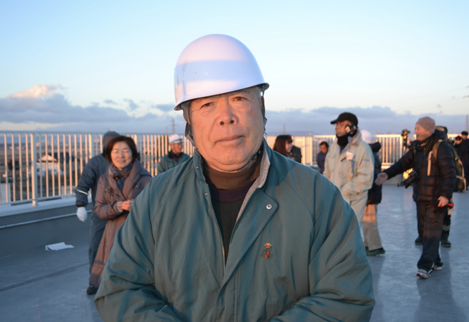

カントリーパーク新浜メンバー紹介
このwebサイトは、宮城で活躍する団体カントリーパーク新浜の紹介サイトです。
これまでの活動実績や、携わったプロジェクトなどを掲載しています。どうぞごゆっくりご覧ください。

|
1944年生まれ。
農薬・化学肥料不使用農業や小学校・地域と連携した稲作体験活動を展開してきました。
都会にはない楽しい豊かな暮らしを提案していきたいと思っています。
|

|
"理事 / 遠藤源一郎"
遠藤環境農園
元八木山動物公園園長。
勤務時代メダカの復興プロジェクトに関わっていました。
定年退職後、新浜地区にて米作りをはじめました。
震災前の豊かだった故郷の自然を取り戻したいという思いから、
化学肥料や化学農薬を使わない農薬化学肥料不使用の稲作をはじめました。
田んぼにメダカを放流し、米を食べる人だけでなく自然環境に優しい農園を目指しています。
|

|
"事務局長/遠藤耕志"
農薬・化学肥料不使用農業や小学校・地域と連携した稲作体験活動を展開してきました。
|
|

|
"顧問/瀬戸勲"
新浜地区出身
幼少の頃から親しんできた当該地域の海辺・海辺・海岸林・田園の自
然、稲作・漁業といった生業集落の伝統・風習などに精通しています。
|

|
"監査 / 平吹喜彦"
平吹研究室
所属：東北学院大学
部署：教養学部 地域構想学科 平吹研究室
職名：教授
学位：博士（理学）（東北大学）
専門は景観生態学、環境教育です。
さまざまな分野の人達と協力しあって、日々奮闘しています。
|

|
"監査 / 棟方有宗"
棟方研修室
所属：宮城教育大学
部署：教育学部 理科教育講座 生物学教室
職名：准教授
学位：博士（農学）（東京大学）
東日本大震災で大きな打撃を受けた野生メダカの保全の研究を行なっています。
|
アクセス